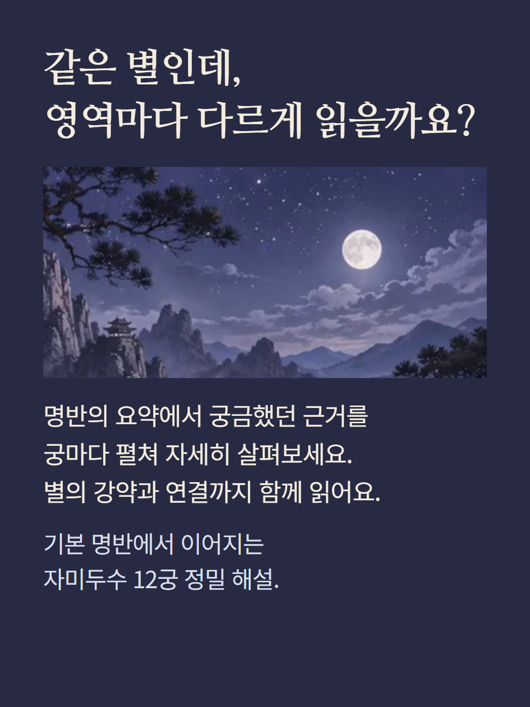
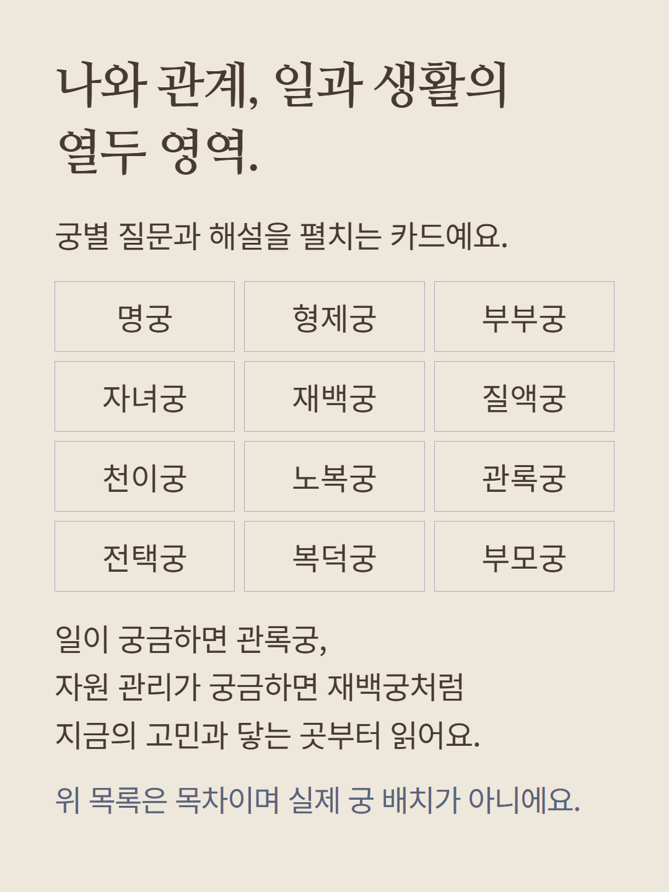
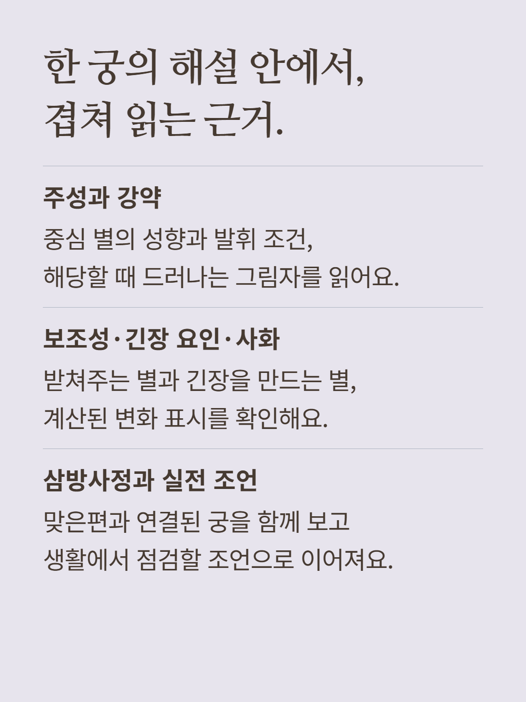
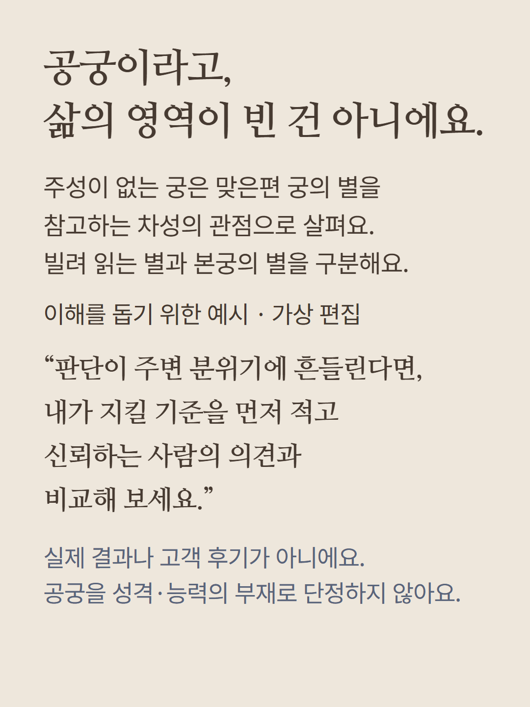
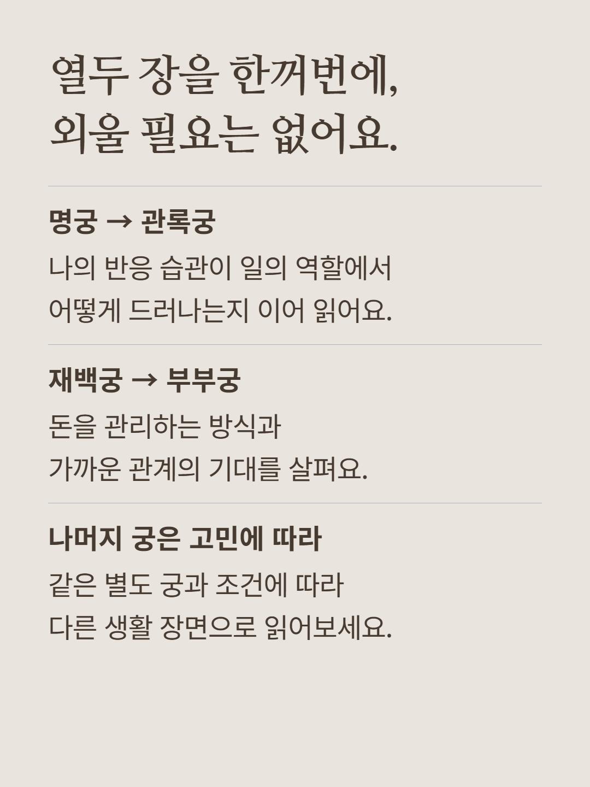
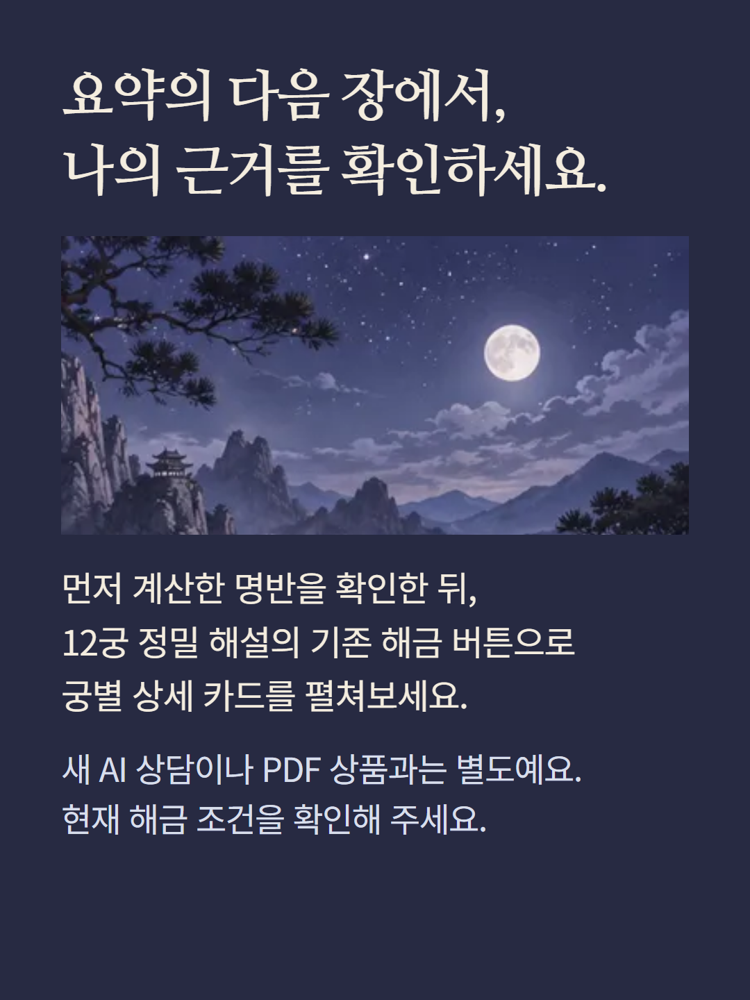

기본 자미두수 명반의 요약에 이어 궁별 근거를 펼치는 해금 상품입니다. 명궁·형제궁·부부궁·자녀궁·재백궁·질액궁·천이궁·노복궁·관록궁·전택궁·복덕궁·부모궁의 자료가 있을 때 각 카드가 표시됩니다. 카드에는 해당 궁의 질문과 의미,최대 두 주성의 성향·강약·차성 표기,조건부 그림자,자료에 있는 보조성·긴장 요인·사화,삼방사정의 연결과 실전 조언을 담습니다. 별과 변화 자료가 없으면 해당 항목이 표시되지 않을 수 있습니다. 공궁은 성격이나 능력의 부재를 뜻하지 않으며,강약도 사람의 가치나 행복의 등급이 아닙니다. 질액궁 등 건강 관련 해석은 자기 점검의 상징적 참고이며 의료 진단이 아닙니다. 이 상품은 계산 자료와 해석 규칙을 이용한 궁별 읽기이며 새 AI 답변·전문가 종합 상담·PDF·별도 궁합은 포함하지 않습니다. 예시는 이해를 돕기 위한 가상 편집이며 실제 결과나 고객 후기가 아닙니다. 이미지는 분위기 연출이며 실제 명반이 아닙니다. 현재 해금 조건을 확인해 주세요.